John's Scrum Certificates
- Scrum Master
- Certified ScrumMaster (CSM) from Scrum Alliance
- Professional Scrum Master III (PSM III) from Scrum.org
- Professional Scrum Master II (PSM II) from Scrum.org
- Professional Scrum Master I (PSM I) from Scrum.org
- Scrum Master Accredited Certification (SMAC) from Scrum Institute
- Implementing Scrum and Avoiding Scrum Anti-Patterns from Pluralsight by Derek Davidson
- Product Owner
- Developer
- Kanban
- Scaled Scrum
- Leadership
- Coach
Articles
Resources
Scrum Master (6)
Certified ScrumMaster (CSM) from Scrum Alliance
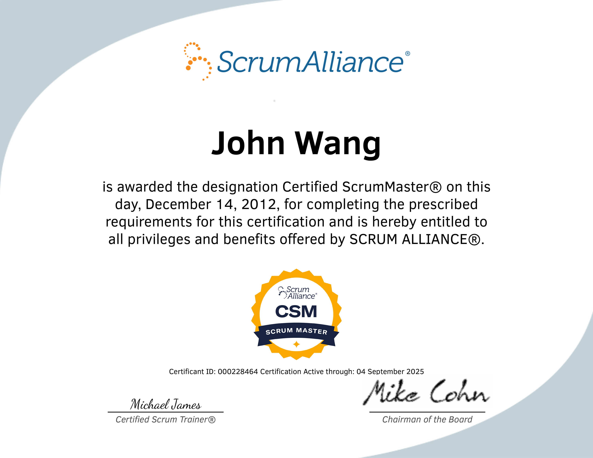
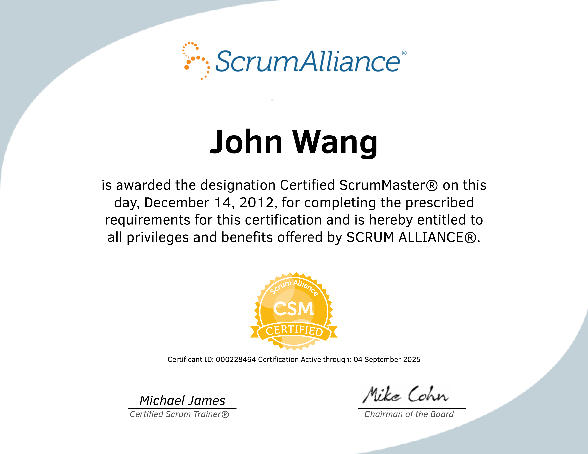
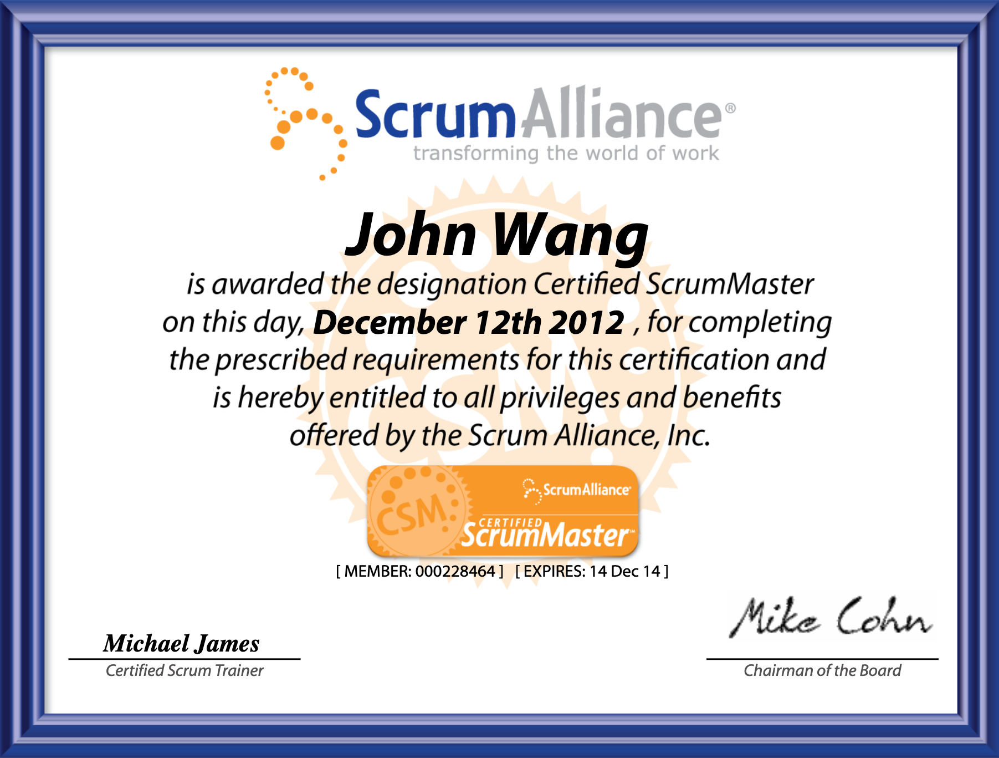
Professional Scrum Master III (PSM III) from Scrum.org

Professional Scrum Master II (PSM II) from Scrum.org


Professional Scrum Master I (PSM I) from Scrum.org


Scrum Master Accredited Certification (SMAC) from Scrum Institute

Implementing Scrum and Avoiding Scrum Anti-Patterns from Pluralsight by Derek Davidson
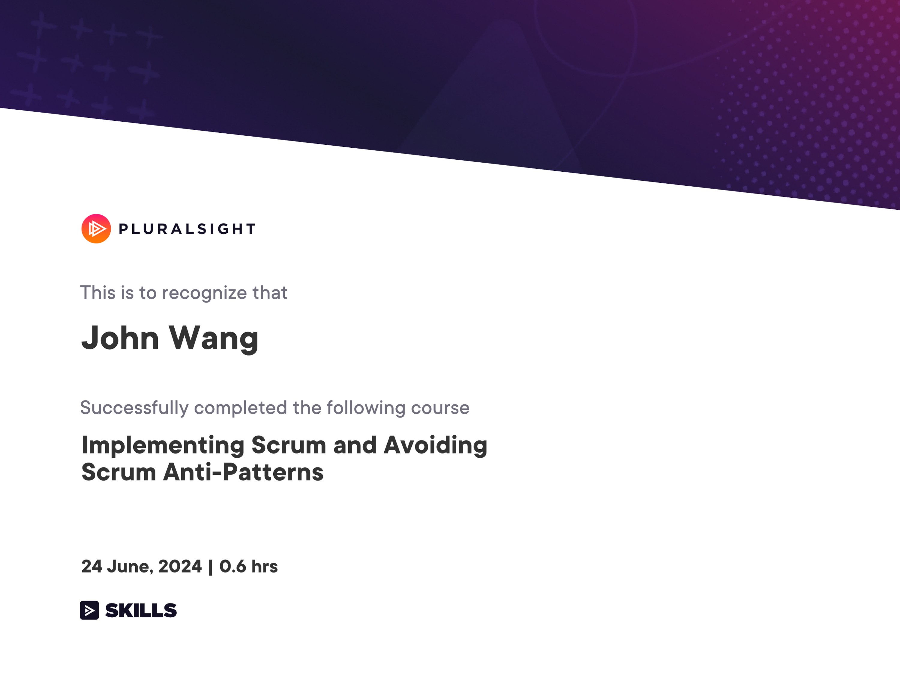
Product Owner (4)
Certified Scrum Product Owner (CSPO) from Scrum Alliance
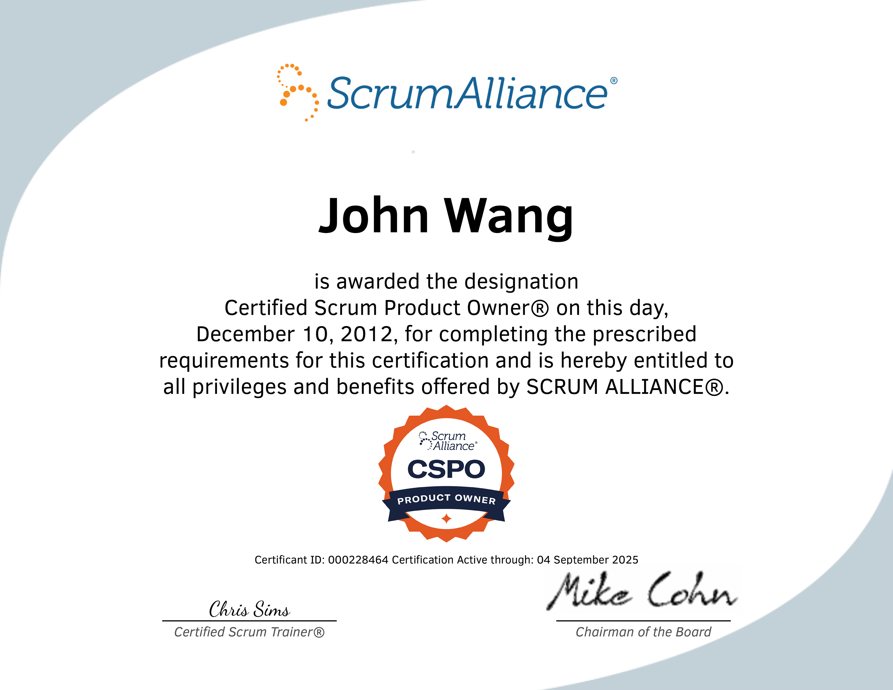
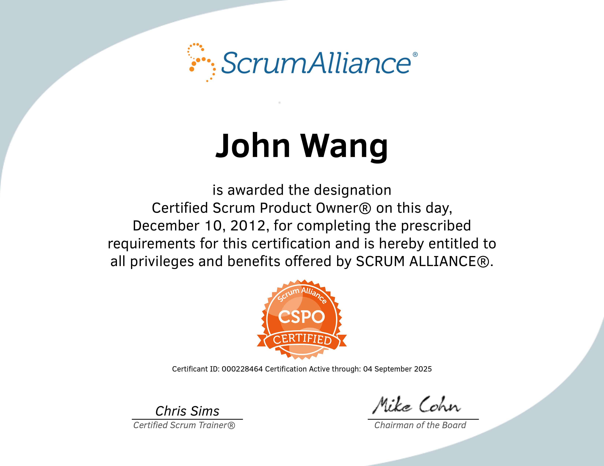
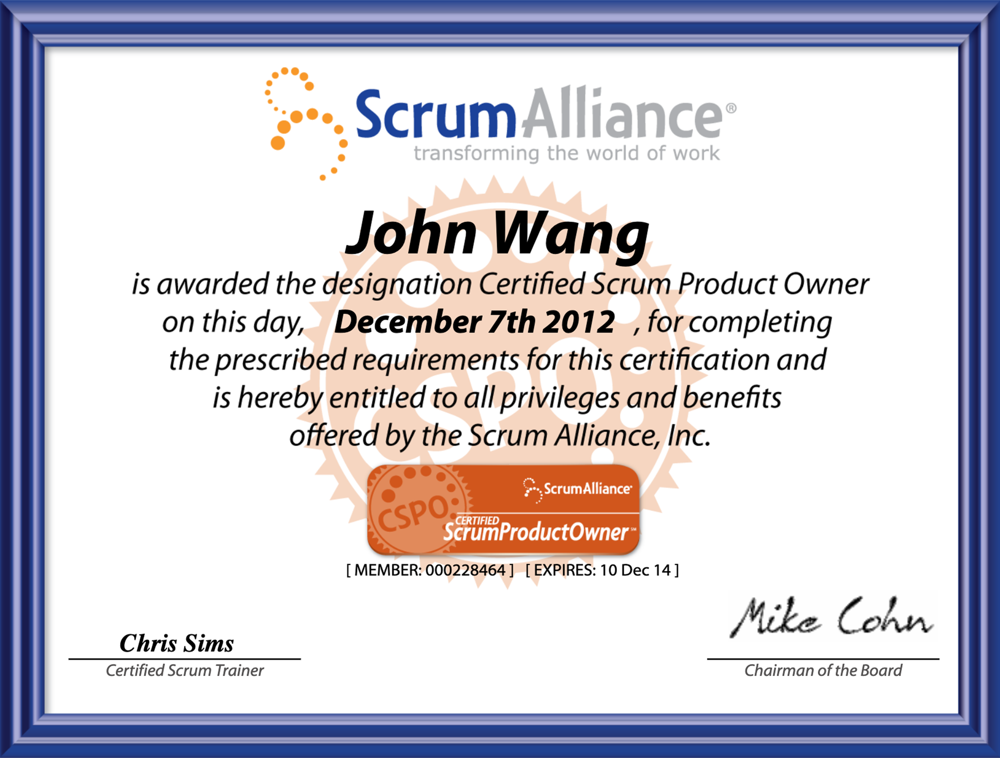
Professional Scrum Product Owner I (PSPO I) from Scrum.org

Scrum Product Owner Accredited Certification (SPOAC) from Scrum Institute

Becoming a Great Product Owner from Pluralsight by Jeremy Jarrell
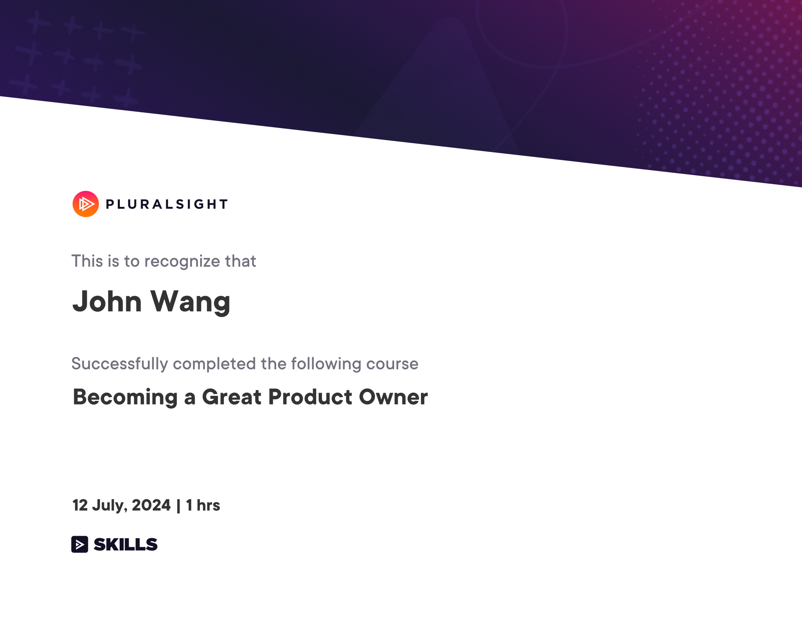
Developer (2)
Professional Scrum Developer (PSD) from Scrum.org
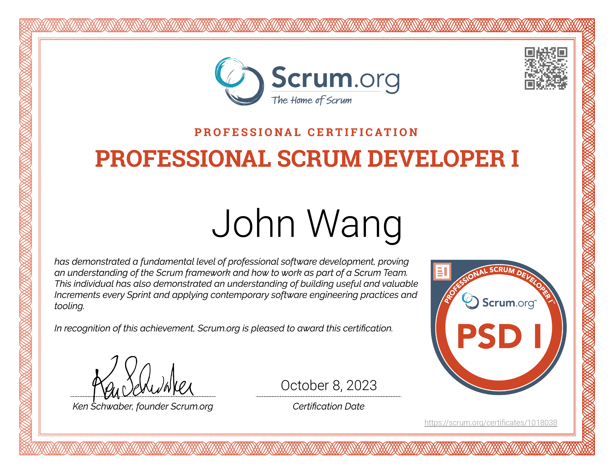
Certified Professional In Design Thinking (CPDT) from Scrum Institute by Yeliz Obergfell

Kanban (1)
Certified Kanban Expert from Scrum Institute
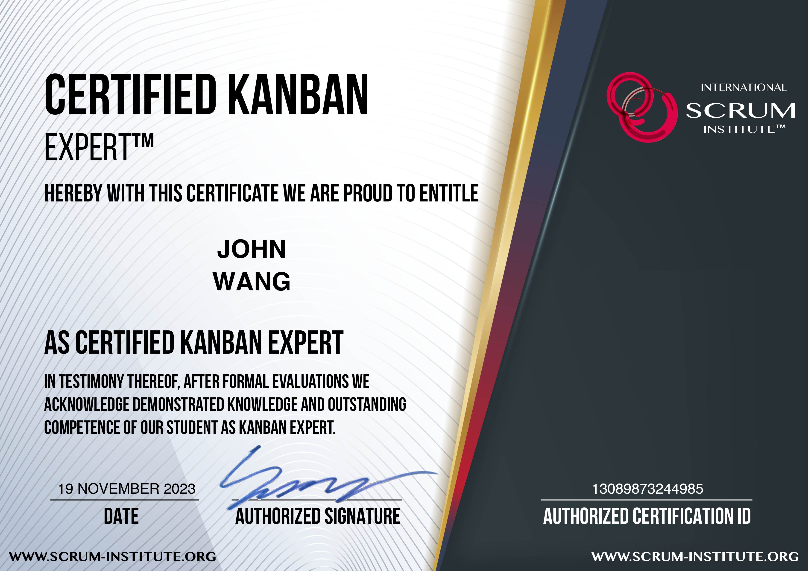
Scaled Scrum (2)
Scaled Professional Scrum (SPS) from Scrum.org

Scaled Scrum Expert (SSEAC) from Scrum Institute

Leadership (3)
Professional Agile Leadership - Evidence-Based Management (PAL-EBM) from Scrum.org
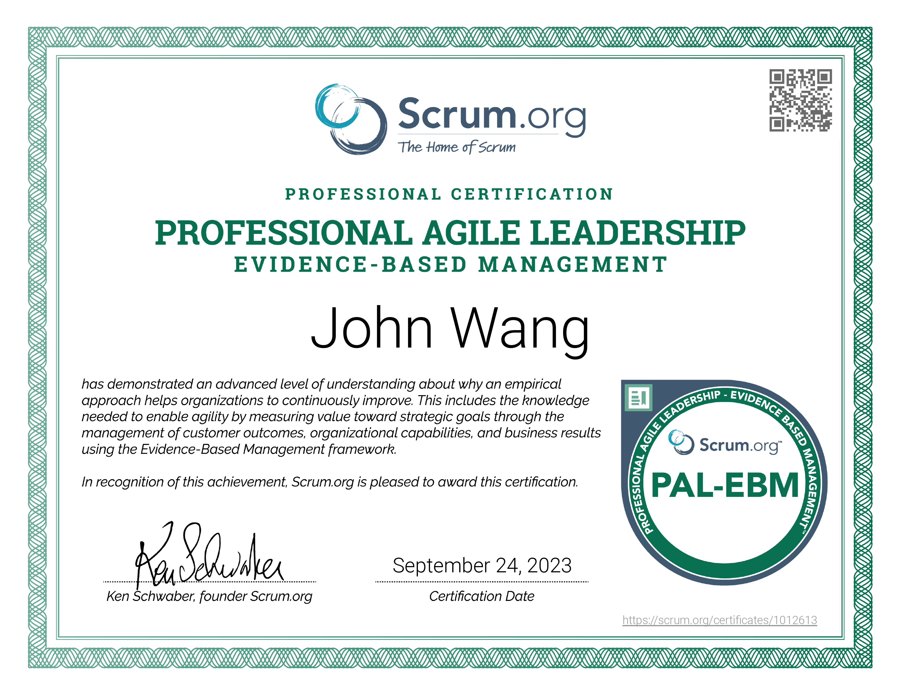
Professional Agile Leadership I (PAL I) from Scrum.org
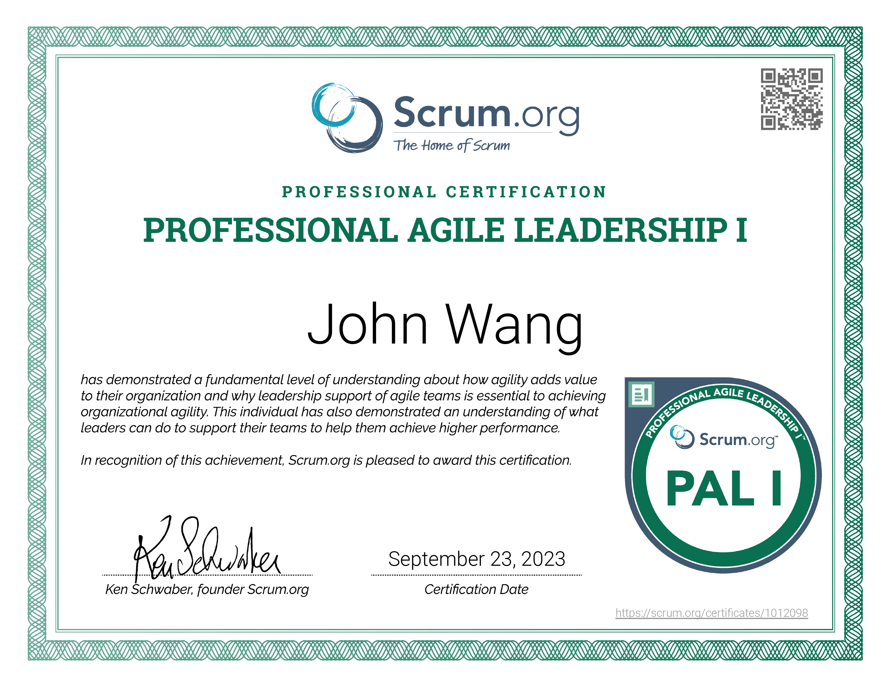
Certified Professional In OKR (Objectives & Key Results) (CPOKR) from Scrum Institute by Yeliz Obergfell

Coach (1)
Agile Coach Accredited Certification (ACAC) from Scrum Institute